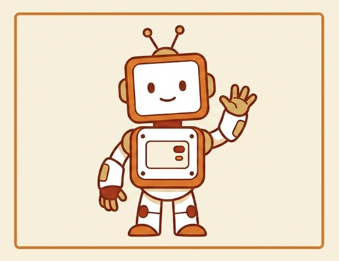
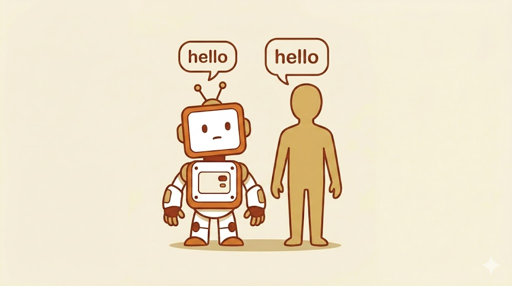
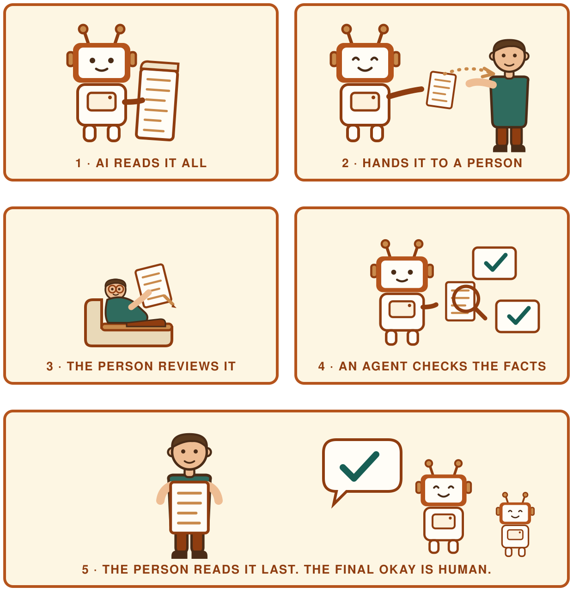
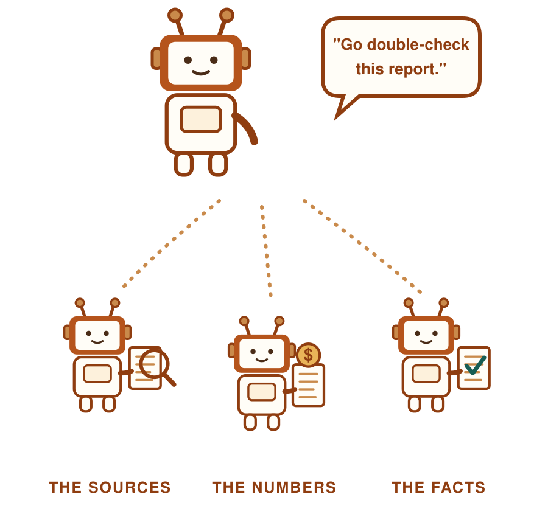
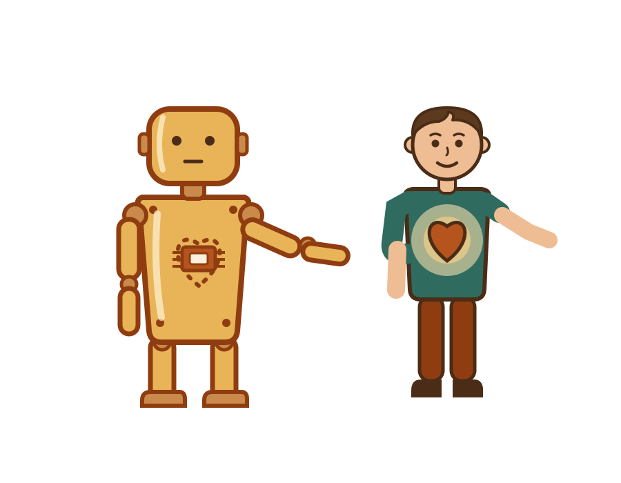
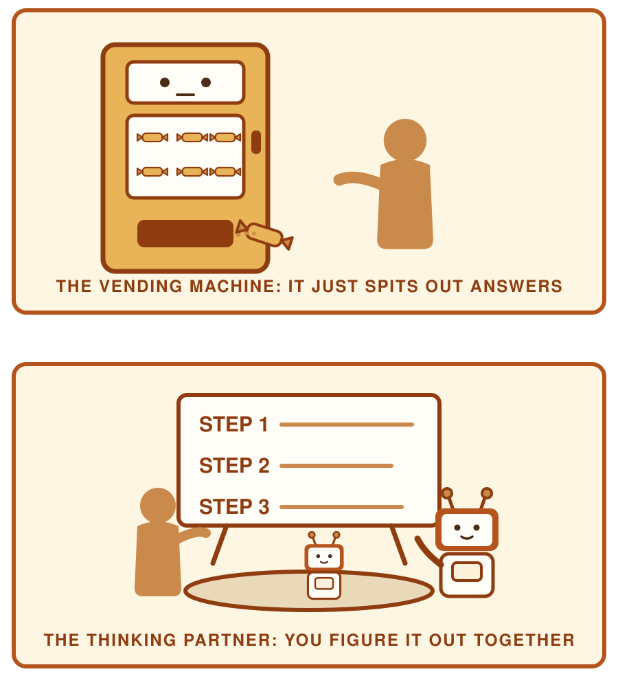
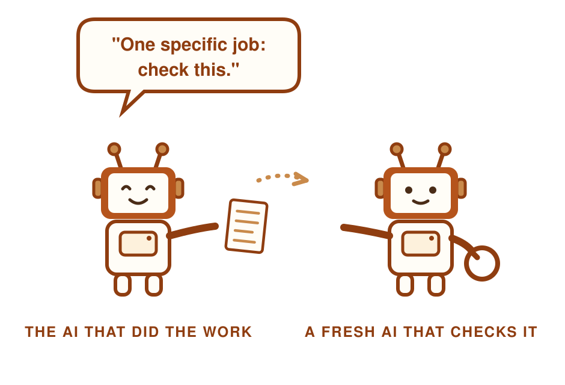
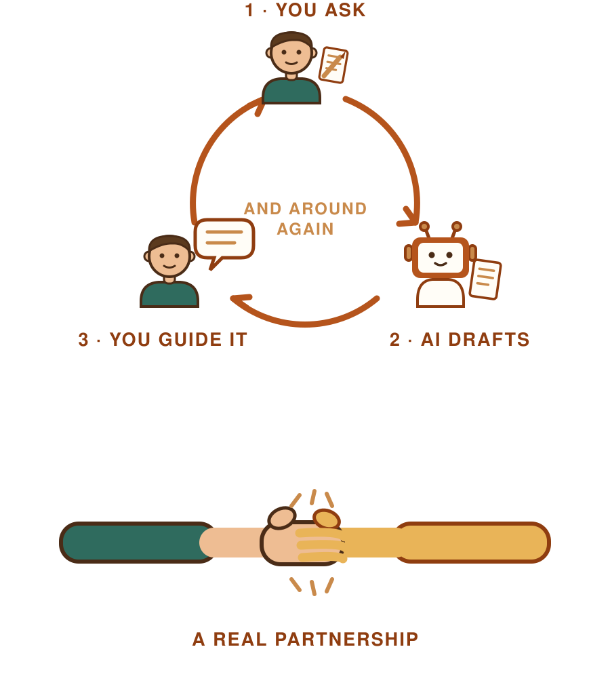
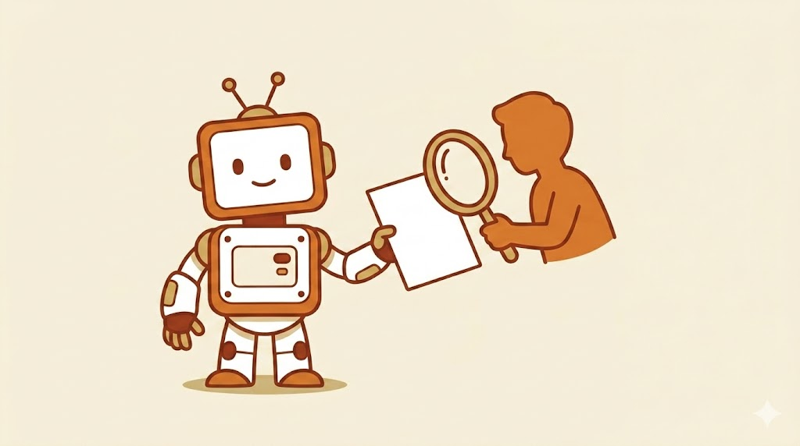

Module 1 of 5 · AI Skills for Everyone
A simple start to using AI at work.

AI stands for "Artificial Intelligence."
That's a big name for a simple idea: AI is a digital companion, a partner you can work with. You can talk to it or type to it. It can answer back.
You may have heard of these AI helpers:
ChatGPT · Copilot · Gemini · Claude

AI learned by reading. A lot.
It read everything. Books, websites, and stories, more than any person could read in a hundred lives.
AI does not really "know" things the way you do.
It reads context, and it can usually figure out, pretty accurately, what you are trying to say.
But underneath, it is guessing the next word.
It is like a super smart guess machine.
AI is great at lots of jobs. Let's look at five of them, one at a time.
Thing 1 of 5 · What can AI do well?
AI can write for you. Emails, notes, lists, even fixing your spelling.
Thing 2 of 5 · What can AI do well?
AI can give you lots of ideas, fast. Use it like a brainstorm partner.
Your turn. Try it, see what you get, and share with a partner.
Thing 3 of 5 · What can AI do well?
The details of your work matter, and they deserve a real read. But sometimes you want a summary first, before diving in.
Go ahead, try it now. See what it comes back with.

Thing 4 of 5 · What can AI do well?
AI can take a complex question and give you a simple answer. Just remember to check what it says.
Thing 5 of 5 · What can AI do well?
Trips. Parties. School projects. Big jobs at work. AI can help you map it out.
Give it details: your dates, your city, the time of year. The more you share, the better the plan.
We watch out
New word: Hallucination
AI can be 100% confident when it is right, and just as confident when it is wrong.
So when do you double-check? Match it to the stakes.
The weather, a ball game score: you are probably fine.
A research report, a financial analysis: ask for the sources and the data, ask it to verify its facts, or use its research mode.

We watch out · How to double-check
You do not have to just trust it. Ask for the evidence.
Especially for anything recent. What AI learned may be months old.
Problem 1 of 3 · Things to watch for
AI does not have a heart.
It uses our words and our language, so it sounds like someone who cares on the other end. It was trained to reflect the people who built it.
When something matters deeply, it can help you write. But your words are more than silicon.

Problem 2 of 3 · Things to watch for
AI doesn't know your job, your team, your boss, or your customers. It is starting from zero every time.
The more specific you are, and the more details you give it, the more precise it can be. Don't have the details? Ask it to help you fill them in.
Used well, it is more than a vending machine. It is a thinking partner.

Problem 3 of 3 · Things to watch for
Think of it like work. When a mistake goes out, the person who signed off on it owns it.
With AI, the one who signs off is you.
When in doubt:

Turn & Talk
When did AI not work the way you wanted?
Or, when did it give you a result that you knew (or felt) was off?
Be ready to share with a partner.
How we work with AI · Better together
Way #1 we team up:
AI gives ideas. You pick the good ones.
How we work with AI
Way #2 we team up:
AI gets you started fast. Then you make it sound like you.
Or flip it: share a sample of your own writing so it learns how you sound, and hand it your ideas, as many as you can.
The words can start with AI. The thinking stays with you.

How we work with AI
Way #3 we team up:
Your eyes catch what AI misses. Together, the work is stronger.

Before you go
Ten minutes. A few questions, then the real moves one more time,
pasting in what you and the AI actually made together.
Open the lab page and scroll to "Show what you learned" →
Your score and your before-and-after confidence appear instantly.
Download your results at the end. That page is your work, in your words.